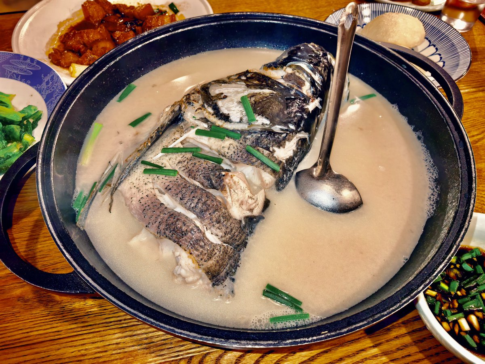
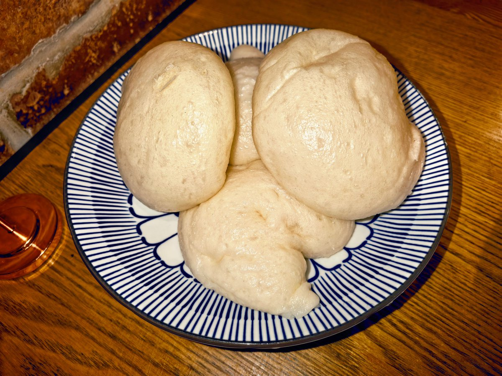

Rain Antares🏳️⚧️🍥
@Rain_Antar1121
#ra今天吃什么
先猜猜咱去哪玩了咪😘～猜之前不许看图四喵🥺
白汤鱼头～奶白浓郁醇兮兮的鱼汤入口很鲜哇，泡了一整碗饭喵🤤发现滑嫩软弹的鱼肉吃多了有点淡才想起旁边有蘸料…浸饱了酸甜鲜香才能激发鱼肉的灵魂呀咪😋
红烧肉中规中矩～不过这个酒酿馒头很有趣欸，带着小揪揪的软白胖胖🥰是有嚼劲的朦胧酒香，蘸上红烧肉汁很棒哦
♡(｡☌ᴗ☌｡)

